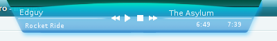
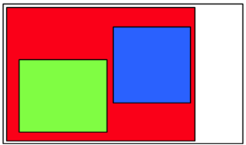
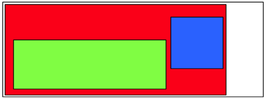

foo_title component
foo_title is my component for foobar2000. Foobar2000 is a music player suitable for advanced users. foo_title's purpose is to show the currently playing song on the top of the screen all the time (something like winamp's windowshade mode). It supports custom-made skins and it's written in C# (with some C++/CLI for binding to foobar, of course). Therefore, you need the .NET Framework 2.0.
Download
You can get the component here. The package includes some skins. Current version is 0.8 as of July 25th 2009.
Hosted at
Screenshots

Features
First of all, this component is ported to foobar2000 v. 0.9.5 and it won't work with older releases.
-
- Transparent skins
- Thanks to Rui Godinho Lopes's PerPixelAlphaForm class, foo_title supports layered transparent skins.
-
- Property sheet support
- You can adjust all properties in the property sheet (Display / foo_title)
- Fading in and out on mousehover
- Album art support
- Clickable buttons with any menu item as the action
- Flexible show/hide timing
0.8 Changelog
- two new skins ;)
- buttons can enable/disable parts of the skin
- buttons can use context menu commands
- images are no longer locked - simplifies skin development
- option to show foo_title when playback is stopped/paused (when not set to show always)
- fixed show n seconds after song start when changing song
- re-loading skin just by clicking Apply skin
- rotated text
- foo_managedWrapper supports creating mainmenu popups
- foo_managedWrapper supports enumerating mainmenu commands, mainmenu groups and popups
- fixed a problem that foo_title would not show when it is set to only show when foobar is minimized
- on song start showing now takes stream title change into account
- metadb_handle handling is probably done better this time
- album art image is resized once and cached, this avoids high CPU usage with large album arts
0.7.2 Changelog
- fixed a problem that foo_title would not show when it is set to only show when foobar is minimized
- on song start showing now takes stream title change into account
- metadb_handle handling is probably done better this time
- album art image is resized once and cached, this avoids high CPU usage with large album arts
0.7.1 Changelog
- auto restoring on top position every now and then ;)
- foo_managedWrapper works on Vista again
- foo_title no longer prevents Windows from shutting down
- skins are now also loaded from the user profile directory (if enabled in foobar)
0.7 Changelog
- fixed disappearing fades
- added support for choosing always on top/normal/on desktop z-order
- added support for creating menu commands from .NET code
- album art image file is no longer locked, it is loaded into memory
- created a custom configuration system
- foo_title can now pop up at the beginning and/or the end of a song
- pressing Alt-F4 on foo_title will disable it instead of crashing
- sticking to screen borders now permits pushing it behind the edge (this should make it possible to put foo_title on a different monitor)
- reset button in the pref page - resets everything, including window position
0.6 Changelog
- support for bold/italic text, textlayer rewritten
- fixed a bug that prevented foo_title from loading when foobar wasn't started from it's directory (fooManagedWrapper)
- added window position storing
- fixed album art not showing when stored in a directory with unicode characters
- skins list refreshes when property page is displayed
- fixed fill-images overlapping it's client rect
- removed icon from alt-tab
- option to show/hide/only when foobar is minimized
- using pure WinAPI to make it stay on top (not sure if it hels though)
- the text is now updating also on stop and pause
- support for defaultText - shown when nothing is playing at the moment
- now it's possible to set the align of scrolling-text when the text is shorter than layer's size
- support for changing opacity - in normal and mouseover state
- other bugfixes
These changes are backward compatible, so all your current skins will work in 0.8 as well.
All changes in skins from previous version is marked like this paragraph.
Installation
Installation is quite easy now. You just need to put the files from the archive to foobar's directory, so that the dlls go to the components directory and there is a new directory called foo_title. This directory contains the skins.
Creating skins
foo_title skins consist of one XML and some image files. The XML file describes where and which images to draw. Supported image formats are those supported by the .NET framework - that is bmp, jpg, .png (for transparent images) and perhaps more.
Each skin has it's own directory under foo_title. The skin.xml must exist in that directory too.
Introduction to creating skins
Skins are composed of multiple images, each of the images is saved as a separate file. Usually there is the main background image and some button images. It is nice when users get visual response to hovering over or clicking a button. This can be accomplished by drawing three variants of each button, one for each state - normal, hover and clicked. All images must be cropped to minimal size - there should be no useless empty (transparent) areas. All three button state images must have the same size and the button features should be located at the same place within the image, otherwise you may end up with buttons that "jump around" when pressed. Look at existing skins for examples. It is recommended to use the PNG format, because it supports the alpha channel, which makes it possible to have nice and round and even semitransparent skins.
Before writing the XML file, we need to know where the buttons and the song information should be located. Use your image editing program to measure the x (how many pixels are there from the skin background's left border to the left border of the button/text) and y (how many pixels are there from the skin's background top border to the top border of the button/text). Write the values down for every button and every piece of separate text.
Now open up Notepad or your favourite XML editor and create a new file called skin.xml in the same folder as
the images. If you are completely new to XML, you may
like to read some introduction to XML on the internet first. Copy and paste the following template:
<skin
author="[your name here]"
name="[skin name here]"
width="[Width of the skin in pixels]"
height="[Height of the skin in pixels]">
<layer name="background" type="absolute-images">
<geometry type="full">
<padding left="0" top="0" right="0" bottom="0"/>
</geometry>
<contents>
<image src="[background.png]" />
</contents>
</layer>
<layer name="[button name]" type="button">
<geometry type="absolute">
<size x="[width of the button image]" y="[height of the button image]" />
<position x="[x as you wrote it down]" y="[y as you wrote it down]" align="left" />
</geometry>
<contents>
<action>
[name of menu item the button should trigger]
</action>
<normalImg src="[name of the image of the button in normal state]" />
<overImg src="[name of the image of the button in hover state]" />
<downImg src="[name of the image of the button in pressed state]" />
</contents>
</layer>
<layer name="trackinfo" type="scrolling-text">
<geometry type="absolute">
<size x="[width of the button image]" y="[height of the button image]" />
<position x="[x as you wrote it down]" y="[y as you wrote it down]" align="left" />
</geometry>
<contents spacing="0" font="Microsoft Sans Serif" size="7">
<label position="left" color="ffebebe6">[%artist% | ][%tracknumber% | ]%title%</label>
</contents>
</layer>
</skin>
Copy each layer block as many times as you have buttons. Replace the values in brackets with actual values. You can also change other attributes if you know what they mean (see elements reference below).
Now it's time to test your skin. Install it like the other skins, open foo_title's preferences page and load it. If something is unclear, you can look at other skins for inspiration, read this documentation more carefully or ask in the Creating skins thread at http://www.hydrogenaudio.org/forums/index.php?showtopic=86282
Elements reference
The main element is skin. It has the following attributes:
- author
- Who's the author of this skin. This information is not shown anywhere yet, but it's nice to know
- name
- The name of this skin. This is quite useless :)
- width
- This is the initial width of the window. However the width is adjusted automatically.
- height
- This is the initiali height of the window, but it is also automatically adjusted.
So the beginning of the xml file should be something like
<?xml version="1.0" encoding="utf-8"?>
<skin
author="Roman Plasil"
name="White skin"
width="400"
height="22">
The main element contains one or more layer elements. Each layer can contain more layers, so it's not a layer in the original sense, because they can be nested.
Each layer has a geometry element which defines the layer's position, size and its behaviour when it's resized.
The layer element looks like this :
<layer name="main" type="absolute-images" enabled="true">
<geometry type="absolute">
<size x="370" y="58" />
<position x="0" y="0" align="left" />
</geometry>
<contents>
<image src="main.png" />
</contents>
<!-- optionally, another <layer> element (or more) go here -->
</layer>
The name attribute is just informative, but type is more important. It chooses the way the content is displayed. More on this later.
There's a new optional attribute, enabled ::= [true] | false
which specifies if the layer is initially enabled. It can be turned off or on using a button.
Layer's geometry
Each layer has got it's geometry, which defines it's position and size within the parent layer. There are two types of geometries:
Almost all the entries in the layer's geometry (size, position, padding) can now contain foobar2000 formatting strings. Everything that works in foobar2000 will work here as well, see titleformat_help.html in your foobar directory for further reference. Please note that this feature when used is slightly more resource demanding (one needs to recalculate the sizes and positions each update, that is usually every 100 ms). Also, unless the string contains a $ or %, it is not evaluated as a formatting string (for performance reasons). But that shouldn't cause any problems, because as far as I know, all formatting strings contain these characters.
A trackbar can be created using an absolute geometry with position similar to the following:
<position x="$add(41, $mul(4, $div($mul(%playback_time_seconds%, 94), %length_seconds%)))" y="19" align="left" />
- full
-
The layer occupies as much space as possible - the whole client area
of the parent layer. full type requires
a padding element with the following
attributes: left, top, right,
bottom. These attributes adjust the
position of the client area of the layer within the parent layer. For
example:
<geometry type="full"> <padding left="66" top="4" right="55" bottom="0" /> </geometry> - absolute
-
The layer has fixed absolute size. It has a
position subelement with the x, y and align attributes. Align can be either left or right. The
x and y
attributes adjust the position of the layer relative to it's
alignment. For example:
<geometry type="absolute"> <size x="200" y="22" /> <position x="0" y="0" align="left" /> </geometry>
  For example, the red layer has a full-type geometry with padding set to all 0's, except for right which is set to something about 60. It contains another layer with a full-geometry (the green one) and you can see that it has large top and right padding and a small left and bottom padding. When the containing (white) layer is resized, the full-geometry layers automatically adjust their sizes. The blue layer has an absolute-geometry and it is not resized. It's align is set to right and you can see that it moves when the red layer is resized.
Layer types
Now that you (hopefully) understand how the layers are placed and sized, let's have a look at what can they contain.
There are the following types of layers:
fill-images
Contains 3 images which are drawn besides to allow nice resizing. One image for the left side, one center image and one image for the right side:
<contents>
<image position="left" src="white\left_back.png" />
<image position="center" repeat="true" src="white\repeat_back.png" />
<image position="right" src="white\right_back.png" />
</contents>
The center image has the repeat attribute, which can be either true or false depending whether you want the center image to repeat or be stretched.
text
This layer just displays some text and it looks like this:
<contents spacing="20" font="Verdana" size="8" bold="true" italic="true">
<defaultText>foobar2000</defaultText>
<label position="left" color="ff1234f6" bold="false" font="tahoma" >%artist% '('%album%')' - %title%</label>
<label position="right" color="ff000000">%_time_elapsed%/%_length%</label>
</contents>
spacing is the space between the left and right labels. The color defines the color in a similar way to HTML colors. The first 2 numbers is alpha. As you can see, the text layer uses foobar's title formatting. This is the only layer which can resize the skin. It does so according to text width. Layer's geometry must be full for resizing to work.
Now you can specify font, size, color, italic and bold attributes in both labels and in the contents node. The values written in the contents node are taken as default and can be overriden in the labels. So in the example above, the left label would be italic, Tahoma of size 8.
The contents layer can also have a defaultText element, which is shown when nothing is playing and on startup.
There is now the angle attribute on the contents element. It can have an arbitrary value, but sizing works properly only for multiples of 90.
scrolling-text
Scrolling text is almost the same as normal text, except the following:
- It can only have one label.
-
You can now specify text align when it's shorter than
layer size. Just write left,
center or right to the position attribute of the
label element:
<label position="center">%artist%</label>
- It does not resize the skin.
- It has two more attributes: speed which specifies the speed of scrolling (a nice value is 50) and pause in ms which specifies the delay when the text reaches either of it's edges. 1000 is a good value
absolute-images
Displays images stretched to full size of the layer, one over another.
<contents>
<image src="default\logo.png"/>
</contents>
animation
Plays repeatedly an animation stretched to full size of the layer.
<contents>
<frame src="white\logoa1.png" />
<frame src="white\logoa2.png" />
<frame src="white\logoa3.png" />
<frame src="white\logoa4.png" />
<frame src="white\logoa5.png" />
<frame src="white\logoa6.png" />
<frame src="white\logoa5.png" />
<frame src="white\logoa4.png" />
<frame src="white\logoa3.png" />
<frame src="white\logoa2.png" />
</contents>
album-art
This layer displays the album art. Each user can configure the filenames in preferences. There is one subelement, NoAlbumArt which defines the image to show when no album art was shown.
<contents>
<NoAlbumArt>
noAlbumArt.png
</NoAlbumArt>
</contents>
button
This layer creates a clickable button. It's subelement action defines the action to do. It can be any command from the main menu, like Play. The subelements normalImg, overImg, downImg select which images to use for the button in the three states.
<contents>
<action>
Next
</action>
<normalImg src="buttons-normal_07.png" />
<overImg src="buttons-over_07.png" />
<downImg src="buttons-down_07.png" />
</contents>
Now you don't have to specify normalImg, overImg, downImg in which case nothing will be drawn.
The action now supports multiple types of actions, selected using the attribute type. There can be more than one action element. They are all executed in the order they appear in the xml file.
menu
Launches a main menu command. The entire path to the menu item must be entered, using / (slash) as a separator. For example the following will set the playback order to random:
<action type="menu">
Playback/Order/Random
</action>
contextmenu
Runs a context menu command. The target of this command is given by the attribute context ::= nowplaying | playlist.
Contextmenu items are rather tricky, because they can be re-ordered by user and components can create the menu dynamically. foo_title always uses the default path to the item. You can find the default path in contextmenu editor when you right-click on the root node and choose Add item. Dynamic items unfortunately don't show up the same way in the menu as the path. Here are some correct examples of valid context menu paths:
Tagging/MP3 Tag Types...
Playback Statistics/Rating/Rating/3
Search For Same/Search For Same/Artist
Properties
toggle
Toggles a layer (including its sublayers) on or off. Disabled layer is not drawn, updated and does not react to input. The attribute
target contains the name of layer to affect. The attribute
only ::= enable | disable | [toggle]
can be used to make the button always enable or always disable (instead of toggling) a layer. To enable/disable more layers at once, simply
include multiple action tags in the button.
See the XML's of the attached skins and feel free to use them as a starting point for your own skins.
About me
My name is Roman Plášil, I study at Faculty of Informatics at Masaryk University, Czech Republic. I hope you'll enjoy this component.